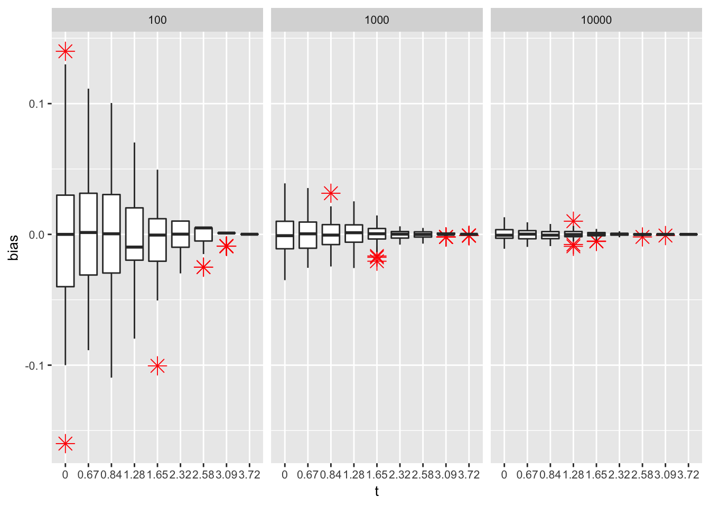

Homework2
2018-09-12
Chapter 1 Exercise 1.2
1.1 Use Monte Carlo to estimate \(\Phi(t)\)
The Monte Carlo methods gives:
\[\hat{\Phi}(t) = \frac{1}{n}\sum_{i = 1}^nI(X_i\leqslant t)\] where \(X_i\) are random normal sample drawn from \(N(0, 1)\).
library(xtable)
phi.MC <- function(n, t) {
phi.hat <- matrix(0, nrow = length(n), ncol = length(t))
for (i in 1:length(n)) {
for (j in 1:length(t)) {
X <- rnorm(n[i], 0, 1)
phi.hat[i, j] <- mean(as.numeric(X <= t[j]))
}
}
truth <- pnorm(t)
phi.hat <- rbind(phi.hat, truth)
}
n <- c(10^2, 10^3, 10^4)
t <- c(0.0, 0.67, 0.84, 1.28, 1.65, 2.32, 2.58, 3.09, 3.72)
set.seed(1)
phi.hat <- phi.MC(n, t)
rownames(phi.hat) <- c(paste0("n = 10e", 2:4), "truth")
colnames(phi.hat) <- paste0("t = ", t)
t.MC <- xtable(phi.hat, digits = 4, caption = "Monte Carlo estimation",
label = "MC result")1.2 Boxplots of bias
Repeat the above expriment 100 times and plot bias of Monte Carlo methods at every time point \(t\) using boxplots.
library(ggplot2)
nsim <- 100
bias <- data.frame(bias = rep(0, nsim * length(t) * length(n)),
t = rep(t, length(n) * nsim),
n = rep(rep(n, each = length(t)), nsim))
for (i in 1:nsim) {
phi.hat <- phi.MC(n, t)
bias$bias[((i-1)*length(t)*length(n)+1):(i*length(t)*length(n))] <-
as.vector(t(phi.hat[1:length(n), ]) - phi.hat[length(n) + 1, ])
}
bias$t <- as.factor(bias$t)
ggplot(data = bias, aes(x = t, y = bias)) +
geom_boxplot(outlier.colour="red", outlier.shape=8, outlier.size=4) +
facet_wrap( ~ n) + theme(text = element_text(size = 10))